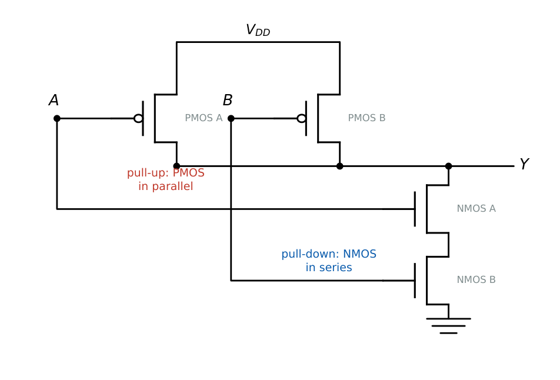

Logic Families and Static CMOS Implementations
In this chapter
Building gates from pull-up and pull-down networks, transistor counts, noise margins, propagation delay (RC and logical effort), fan-in and fan-out, and dynamic power \(\alpha CV^2f\). Includes the legacy TTL numbers that still appear in questions.
10.1 The CMOS inverter
A PMOS (pull-up) and an NMOS (pull-down) share the gate and drain. For \(V_{in}=0\) the PMOS conducts and \(V_{out}=V_{DD}\); for \(V_{in}=V_{DD}\) the NMOS conducts and \(V_{out}=0\). In steady state one transistor is always off, so there is (ideally) no DC path from \(V_{DD}\) to ground.
Switching threshold (\(V_{in}=V_{out}=V_M\), both transistors in saturation):
\[
V_M=\frac{V_{Tn}+r\,(V_{DD}-|V_{Tp}|)}{1+r},\qquad r=\sqrt{\frac{\beta_p}{\beta_n}},\ \ \beta=\mu C_{ox}\frac WL .
\]
A symmetric inverter (\(\beta_n=\beta_p\), \(V_{Tn}=|V_{Tp}|\)) has \(V_M=V_{DD}/2\); since \(\mu_n\approx2\)–\(3\,\mu_p\), make \((W/L)_p\approx2\)–\(3\,(W/L)_n\).
Noise margins: \(NM_H=V_{OH}-V_{IH}\), \(\ NM_L=V_{IL}-V_{OL}\), with \(V_{OH}=V_{DD}\) and \(V_{OL}=0\) for CMOS.
\(V_{DD}=1.8\,\)V, \(V_{Tn}=|V_{Tp}|=0.4\,\)V. Equal \(\beta\): \(V_M=0.9\,\)V. If \(\beta_p/\beta_n=4\) (\(r=2\)): \(V_M=\dfrac{0.4+2(1.8-0.4)}{3}=1.07\,\)V (the threshold moves toward \(V_{DD}\) when the PMOS is stronger).
10.2 Static CMOS gate design

A static CMOS gate has a pull-down network (PDN) of NMOS devices that conducts when the function’s complement \(\overline F\) should pull the output low, and a pull-up network (PUN) of PMOS devices that is the dual. AND \(\to\) series in the PDN, OR \(\to\) parallel in the PDN; the PUN swaps series and parallel.
\(n\)-input NAND or NOR: \(2n\) transistors. Every static CMOS gate is inverting; AND and OR need an extra inverter (\(2n+2\) transistors).
Complex gate \(F=\overline{AB+C}\): PDN = (\(A\) series \(B\)) parallel \(C\); PUN = (\(A\) parallel \(B\)) series \(C\); 6 transistors.
\(F=\overline{AB+CD}\) (AOI22): 8 transistors.
| Gate | PDN | PUN | Transistors |
|---|---|---|---|
| Inverter | 1 NMOS | 1 PMOS | 2 |
| NAND2 | 2 NMOS series | 2 PMOS parallel | 4 |
| NOR2 | 2 NMOS parallel | 2 PMOS series | 4 |
| NAND3 | 3 series | 3 parallel | 6 |
| AND2 | NAND2 + inverter | 6 | |
| XOR2 (static, with input inverters) | 12 (fewer with transmission gates) |
Series stacks are slower (higher resistance), so series devices are made wider. NOR gates are worse than NAND gates because series PMOS (low mobility) are slow.
10.2.1 Pass-transistor and transmission-gate logic
An NMOS pass transistor passes a strong 0 but a weak 1 (\(V_{DD}-V_{Tn}\), threshold drop); a PMOS passes a strong 1 but a weak 0. A transmission gate (NMOS and PMOS in parallel with complementary controls) passes both levels without a drop and is used for MUXes, XOR gates and latches.
10.3 Propagation delay
\(t_{pHL}\): time from the input crossing 50% to the output falling through 50%; \(t_{pLH}\) for the rising output. \(\ t_{pd}=\tfrac12(t_{pHL}+t_{pLH})\). Rise/fall times are measured between 10% and 90% (or 20% and 80%).
First-order RC model: \(t_{pHL}\approx0.69\,R_nC_L\), \(\ t_{pLH}\approx0.69\,R_pC_L\) (with \(R_{n,p}\) the equivalent on-resistance).
Series stack of \(k\) equal devices: resistance \(kR\), so delay rises with fan-in (roughly quadratically when the internal node capacitances are included, as in the Elmore model).
Load capacitance \(C_L=C_{wire}+\sum C_{gate}\) grows linearly with fan-out.
Fan-in is the number of inputs of a gate; large fan-in means long series stacks and slow gates (practically \(\le4\)). Fan-out is the number of gate inputs driven; for CMOS the DC fan-out is essentially unlimited (gate current is zero) but the delay increases linearly with fan-out because of the capacitive load.
10.3.1 Logical effort (compact form)
Gate delay \(d=g\,h+p\) in units of \(\tau\), where \(g\) is the logical effort, \(h=C_{out}/C_{in}\) the electrical effort and \(p\) the parasitic delay. Inverter: \(g=1\), \(p=1\). NAND2: \(g=4/3\); NOR2: \(g=5/3\); NAND\(k\): \(g=(k+2)/3\); NOR\(k\): \(g=(2k+1)/3\).
For a path of \(N\) stages: \(F=GBH\), optimum stage effort \(\hat f=F^{1/N}\), and minimum delay \(D=N\,F^{1/N}+P\).
10.3.2 Critical path delay
The critical path is the longest (slowest) combinational path from a register output (or input) to a register input; it fixes the minimum clock period: \[ T_{clk}\ge t_{cq}+t_{pd,max}+t_{su}. \] Add the gate delays along each candidate path. A false path may be topologically long but never sensitised.
10.4 Power dissipation
Dynamic (switching): \(P_{dyn}=\alpha\,C_L V_{DD}^2 f\), where \(\alpha\) is the switching activity. Energy per full charge–discharge cycle \(=C_LV_{DD}^2\); energy stored on the capacitor \(\tfrac12C_LV_{DD}^2\).
Short-circuit: current while both devices conduct during an input transition. Static: sub-threshold and gate leakage.
Power–delay product \(=P\cdot t_{pd}\). Reducing \(V_{DD}\) cuts power quadratically.
10.5 Other logic families (revision)
| Family | \(V_{OH}\) (min) | \(V_{OL}\) (max) | \(V_{IH}\) (min) | \(V_{IL}\) (max) |
|---|---|---|---|---|
| Standard TTL | 2.4 V | 0.4 V | 2.0 V | 0.8 V |
TTL noise margins: \(NM_H=2.4-2.0=0.4\,\)V, \(NM_L=0.8-0.4=0.4\,\)V. Fan-out \(=\min\!\left(\dfrac{I_{OL}}{I_{IL}},\dfrac{I_{OH}}{I_{IH}}\right)=\dfrac{16\,\text{mA}}{1.6\,\text{mA}}=10\) for standard TTL. Open-collector outputs allow wired-AND and bus interfacing with an external pull-up. ECL operates the BJTs out of saturation for the highest speed and has a negative supply. Tri-state outputs add a high-impedance state.
(i) In a NAND gate NMOS are in series, PMOS in parallel; the reverse holds for NOR. (ii) Static CMOS cannot implement a non-inverting function in one stage. (iii) Dynamic power depends on \(V_{DD}^2\) but not on the transistor on-resistance. (iv) CMOS DC fan-out is not the limitation; capacitive load is.
Transistor count of a single-stage gate \(=2\times\) (number of literals). For \(\overline{(A+B)(C+D)}\): PDN is (A||B) in series with (C||D). Power scales as \(V^2f\); delay scales roughly as \(C_L/\!\left(\beta(V_{DD}-V_T)\right)\).
10.6 GATE problems
Q1. The number of transistors in a static CMOS 4-input NOR gate: (A) 4 (B) 6 (C) 8 (D) 10.
Q2. In a static CMOS NAND gate, the NMOS transistors are connected (A) in parallel (B) in series (C) in a bridge (D) not at all.
Q3. If \(V_{DD}\) is halved at the same frequency and capacitance, dynamic power becomes (A) 1/2 (B) 1/4 (C) 1/8 (D) unchanged.
Q4. A CMOS PDN has \(A\) in series with (\(B\) parallel \(C\)). The gate computes \(F=\) (A) \(\overline{A+BC}\) (B) \(\overline{A(B+C)}\) (C) \(A(B+C)\) (D) \(\overline{AB+C}\).
Answers: Q1 (C). Q2 (B). Q3 (B). Q4 (B).
Q5. A CMOS inverter has \(V_{DD}=1.8\) V, \(V_{Tn}=|V_{Tp}|=0.4\) V, \(\beta_p/\beta_n=4\). The switching threshold is approximately (A) 0.9 V (B) 1.07 V (C) 1.2 V (D) 1.4 V.
Q6. Five identical inverters in a chain each have \(t_{pHL}=2\) ns, \(t_{pLH}=3\) ns. The delay from a rising input to the last stage output (ns): (A) 10 (B) 12 (C) 13 (D) 15.
Q7. A static CMOS gate implements \(F=\overline{AB+CD+E}\). The number of transistors is (A) 6 (B) 8 (C) 10 (D) 12.
Answers: Q5 (B). Q6 (B): rising input \(\to\) stage 1 output falls (2), then rises (3), falls (2), rises (3), falls (2): \(12\). Q7 (C): five literals \(\Rightarrow10\).
Q8. \(\alpha=0.2\), \(C_L=50\,\)fF, \(V_{DD}=1.2\,\)V, \(f=500\,\)MHz. Dynamic power (\(\mu\)W): .
Q9. A 5-stage ring oscillator has \(t_{pd}=0.2\,\)ns per inverter. Oscillation frequency (MHz): .
Q10. A path with total effort \(F=64\) is driven with 3 stages of inverters (\(p_{inv}=1\)). Minimum delay in units of \(\tau\): .
Answers: Q8: \(0.2\times50\text{ fF}\times1.44\times500\text{ MHz}=7.2\,\mu\)W. Q9: \(f=1/(2Nt_{pd})=1/(10\times0.2\text{ ns})=500\) MHz. Q10: \(f=4\) per stage, \(D=3(4+1)=15\).
Q11. Select true statements. (A) Dynamic power is proportional to switching frequency. (B) A NAND2 uses series NMOS devices. (C) Ideal static CMOS dissipates large DC power. (D) \(NM_H=V_{OH}-V_{IH}\).
Answers: Q11: (A), (B), (D).
T1. Transistors in a CMOS 3-input NAND. T2. TTL fan-out for \(I_{OL}=16\,\)mA, \(I_{IL}=1.6\,\)mA. T3. Formula for \(f_{osc}\) of an \(N\)-stage ring oscillator.
Answers: T1: 6. T2: 10. T3: \(f=1/(2Nt_{pd})\) (\(N\) odd).
- PDN = function of \(\overline F\) (series=AND, parallel=OR); PUN = dual. \(2n\) transistors for \(n\) literals.
- \(V_M\) from \(\beta\) ratio; \(NM_H=V_{OH}-V_{IH}\), \(NM_L=V_{IL}-V_{OL}\).
- \(t_{pd}=\tfrac12(t_{pHL}+t_{pLH})\); fan-in slows the gate, fan-out loads it.
- \(P_{dyn}=\alpha C V_{DD}^2f\); ring oscillator \(1/(2Nt_{pd})\); \(D=NF^{1/N}+P\).